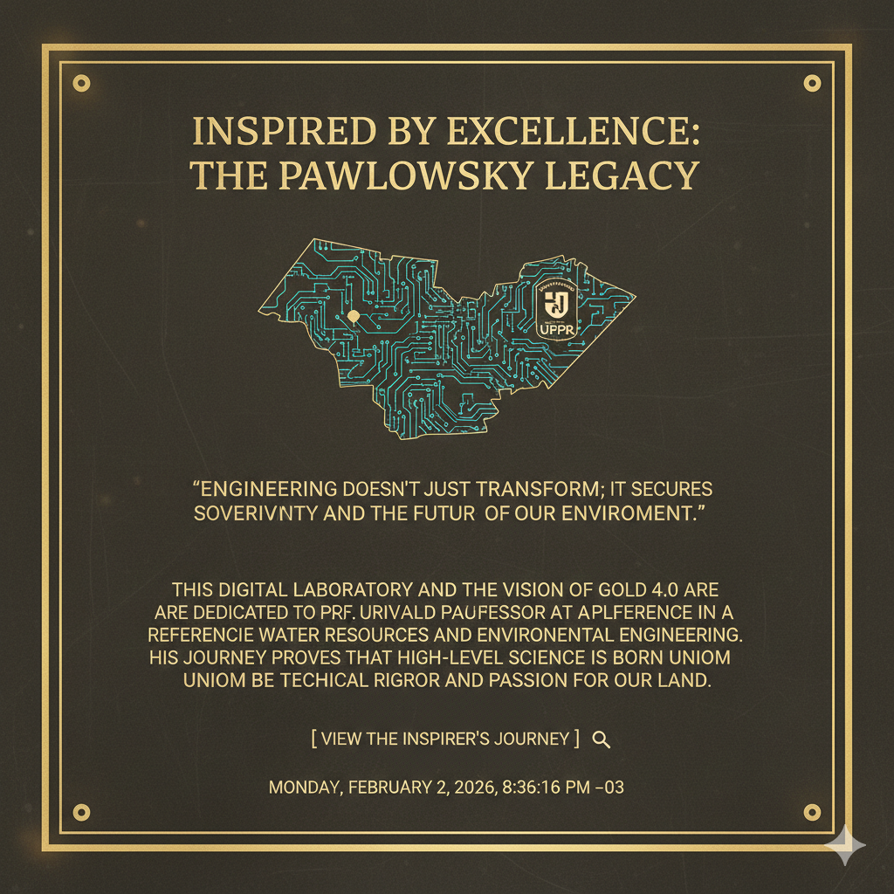

Simulador chmulato/ETE — Minerador 4.0 · Ouro 4.0

Acessível pelo Selo de Qualidade PawlowskyO uso do nome Pawlowsky, das referências às suas contribuições acadêmicas e das equações e fundamentos científicos inspirados em seu legado constitui homenagem ao Professor Urivald Pawlowsky, titular da Universidade Federal do Paraná (UFPR), e à sua contribuição à Engenharia de Recursos Hídricos e Ambiental no Brasil.
Tal uso é de natureza educativa e memorial, reconhecendo que a base científica e didática aqui aplicada tem raízes no conhecimento público e acadêmico desenvolvido na UFPR e em instituições congêneres. Nenhuma afirmação de titularidade sobre o conhecimento científico em si é feita pela Cara Core Informática; a empresa apenas inspira-se nesse legado para fins de ensino e simulação.
Embora a base científica seja de domínio público ou acadêmico, os seguintes bens são propriedade exclusiva da Cara Core Informática:
Cara Core Informática — CNPJ: 23.969.028/0001-37
Os resultados produzidos pelo simulador, em especial os resultados simbióticos (módulo Ambiental e módulo Mineração), são simulações computacionais com finalidade educativa e de apoio à decisão. Eles não substituem análises técnicas, projetos de engenharia ou pareceres realizados por profissionais habilitados.
Qualquer imagem, selo, assinatura ou representação visual que utilize a face, o nome ou elementos identificadores do Prof. Urivald Pawlowsky é utilizada em memória e para fins estritamente educativos, com o propósito de atribuir crédito e honra à sua trajetória acadêmica.
A Cara Core Informática compromete-se a não ferir o direito de imagem e à honra da família do professor. O uso de selos ou referências visuais observa consentimento ou menção de memória e restringe-se ao escopo educativo, sem associação a propaganda comercial que possa ofender a dignidade ou a memória do homenageado.
A ativação da versão Premium (Ouro 4.0), mediante license.key válido no formato emitido pela Cara Core (ex.: chaves MIN40-… vinculadas ao ID de Ativação da máquina), concede licença não exclusiva e limitada para uso do Minerador 4.0 em um único computador, para fins educativos e de simulação, conforme vigência da chave.
O modo Free não exige chave; funcionalidades operacionais e acervo Premium permanecem sujeitos ao paywall na interface. O conteúdo didático em biblioteca pode diferir por tier (Free × Premium) conforme o produto em cada release.